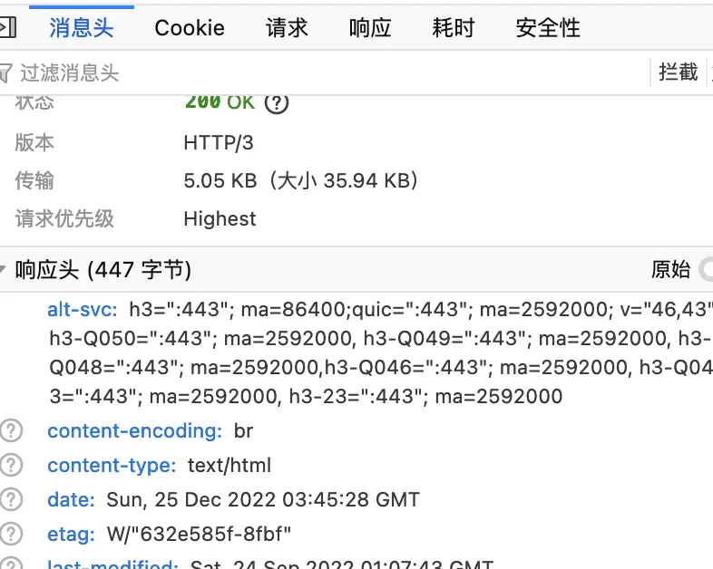

http转向https
rewrite ^(.*) https://$server_name$1 permanent;
rewrite ^(.*) https://$host$1 permanent;
正向代理
server {
listen 80;
location / {
proxy_pass http://$host$request_uri;
}
}
解决无法加载样式表
# 否则无法加载样式表
include /etc/nginx/mime.types;
default_type application/octet-stream;
支持http2
自定义安装带上v2,ssl
./configure --prefix=/Users/Shared/nginx \
--with-http_v2_module \
--with-http_ssl_module \
--with-openssl=/opt/homebrew/Cellar/openssl@1.1/1.1.1m\
--with-debug
配置增加上http2
...
server {
# 默认情况http2都走ssl,所以在ssl加上http2
listen 443 ssl http2;
...
}
...
支持http3
自定义安装带上v3,ssl,brotli
./auto/configure --with-http_v3_module \
--with-stream_quic_module \
--with-http_ssl_module \
--with-http_v2_module \
--add-module=../ngx_brotli \
--with-cc-opt="-I../libressl/build/include" \
--with-ld-opt="-L../libressl/build/lib"
配置增加上http3
...
http {
brotli on;
brotli_comp_level 6;
brotli_types text/plain text/css application/json application/x-javascript text/xml application/xml application/xml+rss text/javascript application/javascript image/svg+xml;
server {
# 默认情况http2都走ssl,所以在ssl加上http2
listen 443 ssl http2;
listen 443 http3 reuseport; # UDP listener for QUIC+HTTP/3,在主域名表示reuseport，否则会提示冲突
ssl_protocols TLSv1.3; # QUIC requires TLS 1.3
# 一定要添加头部，否则无法开启
add_header alt-svc 'h3=":443"; ma=86400;quic=":443"; ma=2592000; v="46,43", h3-Q050=":443"; ma=2592000, h3-Q049=":443"; ma=2592000, h3-Q048=":443"; ma=2592000,h3-Q046=":443"; ma=2592000, h3-Q043=":443"; ma=2592000, h3-23=":443"; ma=2592000';
...
}
...
}
...

四层代理-stream
自定义安装带上stream
./configure --prefix=/Users/Shared/nginx \
--with-stream \
--with-debug
make && make install
配置增加上stream
...
stream {
server {
listen 8411;
proxy_timeout 3s;
proxy_pass xxx:8411;
}
}
...
gzip-压缩支持
...
http {
# 打开gzip指令，否则后面不会生效
gzip on;
# 回包头部增加content-encoding: gzip
gzip_vary on;
# 压缩类型
gzip_types text/plain text/css application/json application/x-javascript text/xml application/xml application/xml+rss text/javascript application/javascript image/svg+xml;
}
...
location / {
#可以多次映像/复制,从而起到放大流量功能
#产生一个http subrequest "/mirror?",跳转到相应location
#所以mirror结果(包括超时,服务器关闭,50x,40x等等),不影响这个本身速度及结果
#但是占用内存,消费conn连接池之类还是要的
#mirror /mirror;
#mirror /mirror;
mirror /mirror;
#允许丢掉body
#mirror_request_body off;
proxy_pass http://backend;
}
location = /mirror {
# 判断请求方法，不是GET返回403,用其他类似手段缩小流量规模
# if ($request_method != GET) {
# return 403;
# }
internal;
#这里的回包是忽略
proxy_pass http://test_backend$request_uri;
#允许丢掉body
#proxy_pass_request_body off;
#proxy_set_header Content-Length "";
proxy_set_header X-Original-URI $request_uri;
}
利用日志调试
server {
...
#降低错误日志等级,例如notice,如果编译带有--with-debug,则可以debug,debug_http
error_log logs/error.log info;
#不同路径不同access日志文件,确认哪个loc使用
location /hello {
...
access_log logs/hello_access.log;
...
}
location /world {
...
access_log logs/world_access.log;
...
}
...
}
root与alias区别
# 请求/abc/123 ==> /var/www/app/static/abc/123
location /abc {
# In case of the root directive, full path is appended to the root including the location part
# 请求的path附加上root指定path,组合本地路径
root /var/www/app/static;
autoindex off;
}
# 请求/abc/123 ==> /var/www/app/static/123
location /abc {
# only the portion of the path NOT including the location part is appended to the alias.
# 请求的path移除掉location的path,再附加上alias指定path,组合本地路径
alias /var/www/app/static;
autoindex off;
}
http_memcached模块
...
location /memcached {
set $memcached_key "$uri";
memcached_pass 127.0.0.1:11211;
#指示返回为html,方便浏览器直接显示
default_type text/html;
error_page 404 502 504 = @notexit;
}
location @notexit {
#echo为第三方模块引入指令,方便调试
echo "noexit$uri";
}
...
ngx_http_redis第三方模块,类似http_memcached
./configure --prefix=/Users/Shared/nginx \
--add-module=../nginx-party-module/ngx_http_redis-module \
...
--with-debug
make && make install
...
location /redis {
set $redis_key "$uri";
redis_pass 127.0.0.1:6379;
#指示返回为html,方便浏览器直接显示
default_type text/html;
error_page 404 502 504 = @notexit;
}
location @notexit {
#echo为第三方模块引入指令,方便调试
echo "noexit$uri";
}
...
redis2-nginx-module第三方模块,更强大更多操作
./configure --prefix=/Users/Shared/nginx \
--add-module=../nginx-party-module/redis2-nginx-module \
--with-debug
make
make install
...
location = /foo {
set $value '<html><H1>From Nginx Redis</H1></html>';
redis2_query set one $value;
redis2_pass 127.0.0.1:6379;
}
location = /get {
redis2_query get one;
redis2_pass 127.0.0.1:6379;
}
...
server_names_hash问题
[emerg] could not build server_names_hash, you should increase server_names_hash_bucket_size: 32
解决办法
# 如果不够,继续增加,大小必须是32*n
server_names_hash_bucket_size 64;
invalid request问题
# asscess.log 有这种提示
"PRI * HTTP/2.0" 400 157 "-" "-"
# error.log 有这种提示
client sent invalid request while reading client request line
解决办法-客户端没有采用ssl,tls,但访问nginx配置需要ssl
php-fpm出现Primary script unknown问题
尝试修改nginx配置
# FastCGI sent in stderr: "Primary script unknown" while reading response header from upstream,
# fastcgi_param SCRIPT_FILENAME /scripts$fastcgi_script_name;
fastcgi_param SCRIPT_FILENAME $document_root$fastcgi_script_name;
如果仍然不行,则打开php-fpm.conf日志配置
access.log = /var/log/php-fpm.$pool.access.log
再打开nginx日志配置
# http
log_format scripts '$document_root$fastcgi_script_name > $request';
# server
access_log /usr/local/nginx/scripts.log scripts;
重启nginx,和php-fpm 查看日志,一般是路径不对和权限不对
php-fpm出现无法连接数库,可能是编译参数不对
./configure --enable-fpm --prefix=/usr/local/php --with-mysqli=mysqlnd --with-pdo-mysql=mysqlnd
不知道当前nginx所用配置文件
# 获取nginx进程号
ps -ef | grep nginx
# 获取nginx路径
cd /proc/pid
ls -a
# 执行相应路径的语法测试,输出就能看到路径
nginx -t
不知道当前nginx的编译参数
# 获取nginx进程号
ps -ef | grep nginx
# 获取nginx路径
cd /proc/pid
ls -a
# 执行相应路径的语法测试,输出就能看到路径
nginx -V